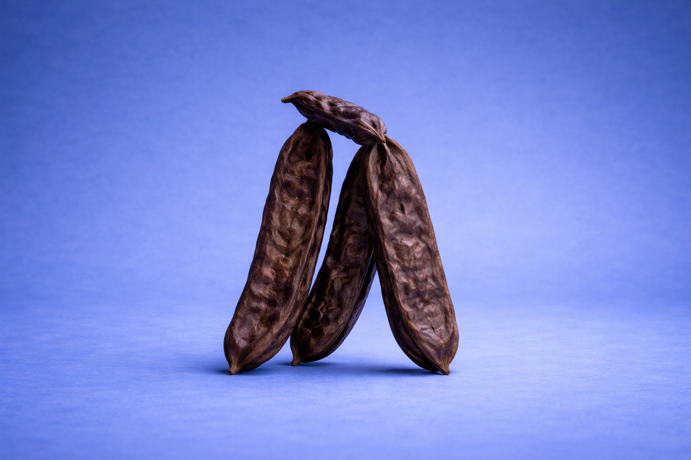

BENCHMARK · real_1's existing "What is carob" section (this is the look to match)
Contained rounded card · ink text on paper · calm 56px rhythm

What is carob?
Carob is a naturally sweet pod that grows in the warm Australian sun. We slow-roast it and turn it into bars with simple, real ingredients. No caffeine, no cacao, nothing added.
Learn Morev2 · Brunswick origin band (rebuilt to match)
Same contained card + ink-on-paper as the benchmark · image right, copy left · place-true copy
Our Story
Handmade in Brunswick Heads.
Every Maple Moon bar is made by hand, in small batches, on the far north coast of New South Wales. Australian-grown carob pods, sun-ripened and slow-roasted, then milled with cacao butter and nothing else.
Read our story
v3 · Ritual section (on-theme image + varied layout)
Image-dominant + taller card (breaks the 50/50 rhythm) · on-theme moons-lifestyle evening scene · icon checklist + plinth dropped for an editorial lede + inline moments

A sweeter kind of ritual.
For the slow part of the evening, when the light goes soft. Naturally sweet, with no caffeine and nothing it does not need.
After dinnerIn the eveningOn the goAnytime